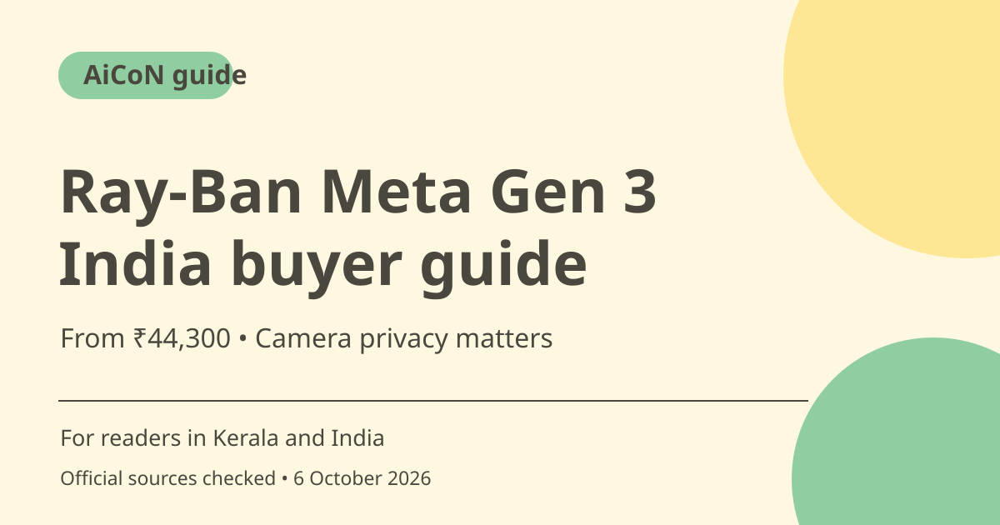

Ray-Ban Meta Gen 3 in India: price, features and privacy
Meta's October 2026 announcement confirms Ray-Ban Meta Gen 3 availability in India from ₹44,300. It advertises a camera, audio and AI features, with up to nine hours of battery. Check the exact frame, fit, price and return terms before buying; Muse is described as coming later.

What is Ray-Ban Meta Gen 3?
These are connected glasses with camera, microphones, audio and access to Meta AI. Meta's India announcement describes a 12 MP camera, 3K video and a six-microphone array. They are a paid wearable device, not a free AI app or a promise of an augmented-reality display. Avoid confusing Gen 3 camera glasses with separately announced audio-only products.
India availability and price
Meta announced prices starting at ₹44,300 and retail access through Meta, Ray-Ban and stores in India. The official Indian Ray-Ban Wayfarer listing checked for this guide also shows as low as ₹44,300. That is a starting price, not the price of every frame, lens or prescription option. Meta's Aviator store page has a different product price, so choose the actual variant before comparing costs.
Battery and performance are provider claims
Meta says Gen 3 offers up to nine hours of battery and describes noise reduction from its microphone array. Up to is not a promise of nine hours under every camera, call or AI workload. This guide did not perform an independent battery or noise test. Review the use conditions and compatibility for your intended phone and daily routine.
Muse is not part of today's verified feature promise
The announcement says Muse will come to the glasses in the coming months. It describes future hands-free agent capabilities, but does not make them current just because the hardware is on sale. Decide whether the features available now justify the purchase; do not buy only on an assumed rollout date.
A recording LED is not consent
Meta says a built-in LED helps people nearby know when photos or video are being taken. Tell people before recording and respect private workplaces, classrooms, hospitals, homes and other restricted spaces. A light can be missed or misunderstood. Do not use camera glasses to record conversations or private information without the required permission.
Check return, fit and prescription terms
The checked Indian product listing marks the item non-returnable and non-exchangeable. That makes trying the fit and understanding the seller's terms especially important. Check size, lens type, prescription handling, warranty and what happens if an item is defective. Do not assume a general store return policy overrides the specific listing.
How to use it, step by step
- Open the official India store or the verified product listing and confirm the item is Gen 3, not Gen 2 or an audio-only model.
- Choose the exact frame, size, lens and prescription requirements. Try the fit through an authorised route if possible.
- Compare the selected variant price with the starting price and review stock, delivery, warranty and return or exchange terms.
- Read current compatibility and setup requirements for your phone before purchase. Do not assume every AI capability works identically in every region.
- After setup through the manufacturer's current instructions, test a short recording in a place where recording is permitted.
- Confirm bystanders understand when the camera is used, and check the indicator and privacy settings. Obtain permission where needed.
- Use current supported features; treat Muse as a future rollout described by Meta until it is actually available to your account.
Cost, eligibility and limits
| Starting India price | ₹44,300 in Meta's India announcement and the checked Ray-Ban Wayfarer listing. Exact frame and lens prices vary. |
|---|---|
| Other costs | Check prescription lenses, delivery, warranty and the final seller total. No purchase or booking has been made. |
| Returns | The checked Ray-Ban product listing says non-returnable and non-exchangeable. Verify the current terms for the exact seller and item. |
| Feature limits | Battery is up to nine hours per Meta, not independently tested. Muse is announced for coming months, not confirmed as currently available here. |
Frequently asked questions
Are Gen 3 glasses officially available in India?
Yes. Meta's India announcement and a current official Indian listing confirm availability.
Does every model cost ₹44,300?
No. It is a starting price; the selected frame, lens and other options determine the final amount.
Does the LED mean recording needs no permission?
No. An indicator does not replace consent or a venue's recording rules.
Official sources
Checked 6 October 2026. Features and prices can change. This is a guide, not a personal product test.